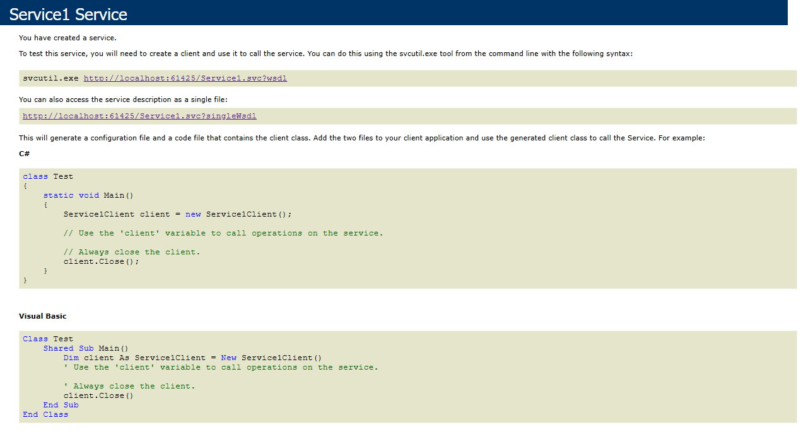
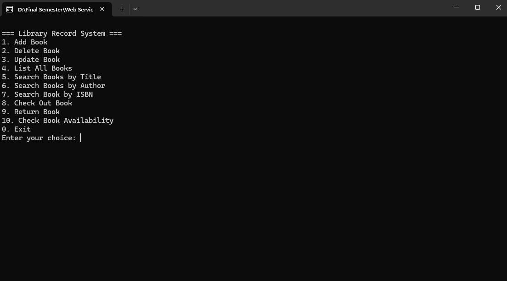
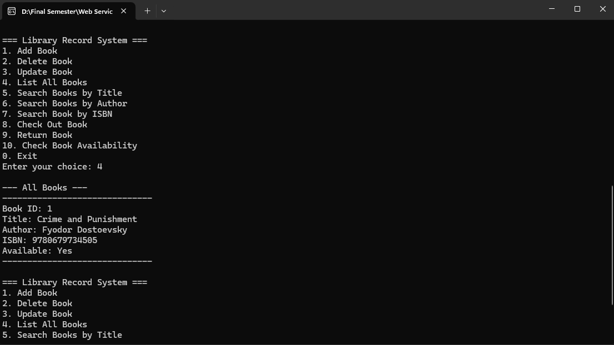

The Library Record WCF Service is a C# web service project built for CIS 266. The project demonstrates how to define a WCF service contract, expose book management operations, and consume those operations from a separate console client application.
The solution contains two main projects. The CampusBookingSystemJS
project hosts the WCF service and defines the service contract, data contract,
and service implementation. The LibraryConsole project connects to
the service through a generated service reference and provides a menu-driven
console interface for testing the library record operations.
List<Book>Book data contract with book ID, title, author, ISBN, and availability fields
This sample shows the service contract and the Book data contract.
The service contract declares the operations that the console client can call,
while the data contract defines the book object passed between the client and
the WCF service.
[ServiceContract]
public interface IService1
{
[OperationContract]
void AddBook(Book book);
[OperationContract]
void UpdateBook(Book book);
[OperationContract]
void DeleteBook(int bookID);
[OperationContract]
Book GetBook(int bookID);
[OperationContract]
List<Book> GetAllBooks();
[OperationContract]
List<Book> SearchByTitle(string title);
[OperationContract]
List<Book> SearchByAuthor(string author);
[OperationContract]
Book SearchByISBN(string isbn);
[OperationContract]
bool CheckBookAvailability(int bookID);
[OperationContract]
void CheckOutBook(int bookID);
[OperationContract]
void ReturnBook(int bookID);
}
[DataContract]
public class Book
{
[DataMember]
public int BookID { get; set; }
[DataMember]
public string Title { get; set; }
[DataMember]
public string Author { get; set; }
[DataMember]
public string ISBN { get; set; }
[DataMember]
public bool IsAvailable { get; set; }
}This code represents the core WCF structure of the project: the service contract lists the operations exposed by the service, and the data contract defines the data shape shared between the WCF service and the console client.


